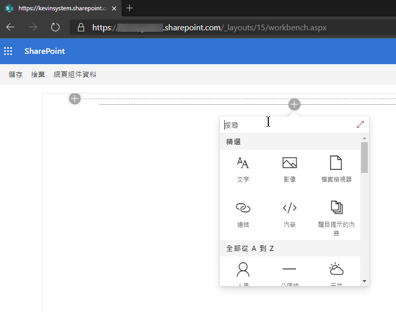
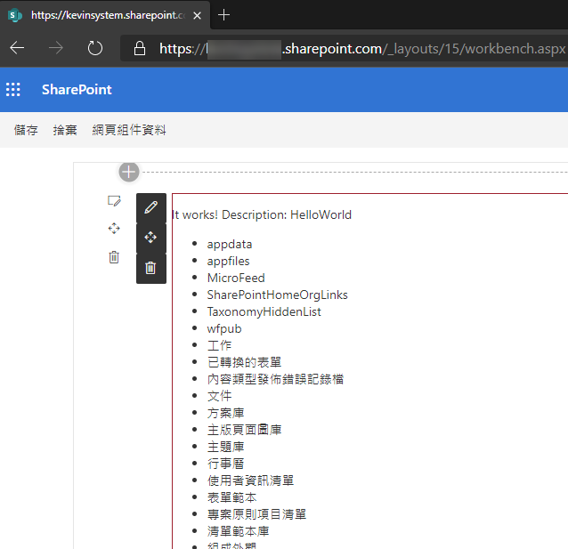
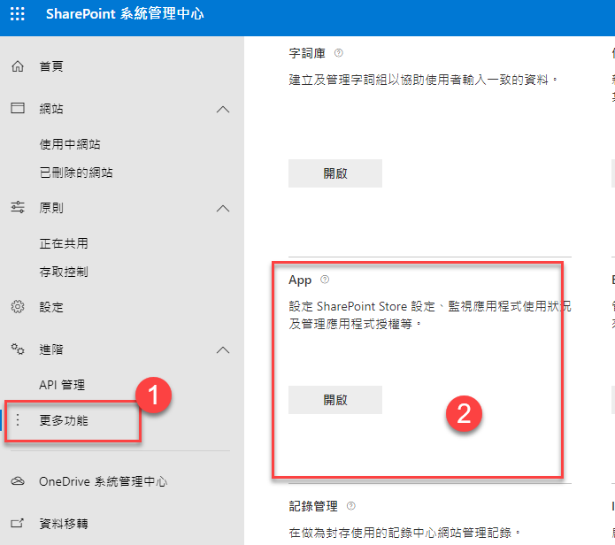
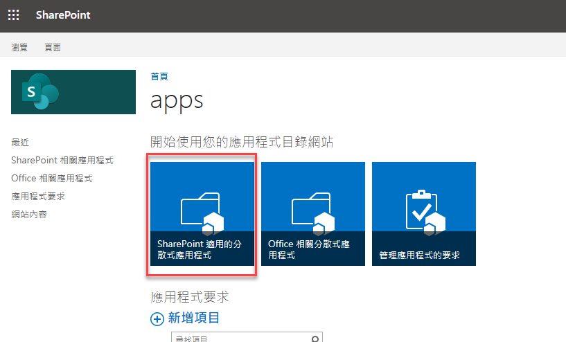
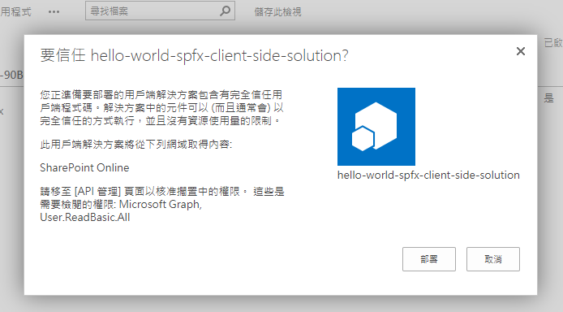
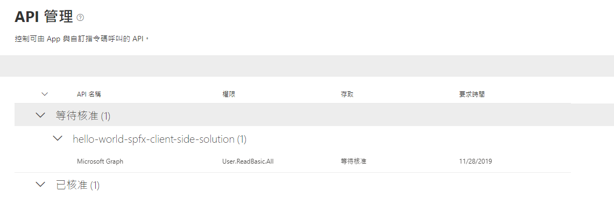
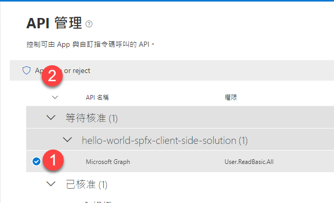
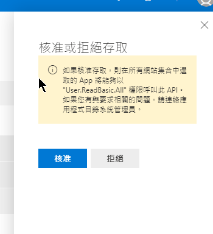

上一篇 介紹了如何使用 Angular Element 建立 SharePoint 的 WebPart，但如果不串接資料，這功能就太弱了，所以這篇就來記錄一下，如何使用內建的方法來取得 SharePoint 或是 MS Graph 的資料
但由於使用 Graph API 需要在環境設定權限等，這篇就不做這部分的範例 (也找不到相關的資料.QQ) 找到方法，補充在後面
要連接 SharePoint 的資料，我們可以透過 @pnp 的套件來完成，官方說明文件
安裝
可以使用的套件有這些，可以選擇安裝自己需要的部分即可
1 | npm install @pnp/logging @pnp/common @pnp/odata @pnp/sp @pnp/graph --save |
初始啟動
文件上有提供三種啟動方式，這裡我就舉其中一種方法，在 WebPart 的程式裡，加入這些程式碼
1 | public onInit(): Promise<void> { |
取 SharePoint 資料
在 Angular Element Component 單純使用 @pnp/sp 包裝好的 api，就可以很輕鬆地取得相關的資訊
1 | import { sp } from '@pnp/sp'; |
1 | <ul> |
更多 @pnp/sp Library API 可以閱讀此文件
測試
由於 @pnp/sp 內有包 context 這物件，而這物件只有在真正的 SharePoint 環境才會存在，那我們也不可能每次都要打包上傳到正式環境，基於這裡由。其實在當執行 gulp serve 時，除了本機會啟動一個測試用的環境外，也會試著遠端連線到 SharePoint Server (不確定這邊的原理是什麼)，但可以透過開啟 https://{sharepoint-site-name}.sharepoint.com/_layouts/15/workbench.aspx 來進行遠端測試

可以看到正式環境擁有的 App，當然也可以找到我們正在寫的 WebPart，找到後加入到頁面上，就可以看到撈出來的資料有正常的顯示到畫面上了

使用 Graph API
程式碼
呼叫 graph 的程式碼不困難，但一樣相依 context 這一個物件，所以如果 Angular Element component 要使用，就要被傳進 component
1 | export class HelloWorldWebPartComponent implements OnInit, AfterViewInit { |
而 WebPart的部分就要將 context 傳進去
1 | public render(): void { |
權限設定
當要使用 graphAPI 時，需要在 SPFx 專案下的 config/package-solution.json 內的 solution 區塊新增 webApiPermissionRequests 的權限請求
1 | "webApiPermissionRequests": [ |
為了要將權限請求限制在此 WebPart，需要多開啟一個設定
1 | "isDomainIsolated": true, |
當這些都設定完成後，就需要上傳到 SharePoint 做 API 權限請求核准的動作，先來打包一下，依序執行動作
-
編譯打包 Angular Element，在 Angular 專案內執行
npm run bundle -
在 SPFx 專案下，執行以下指令
gulp bundle --shipgulp package-solution --ship: 會產生一個.sppkg檔案在sharepoint/solution的資料夾下
-
打開 SharePoint 網站，進入
應用程式目錄網站的網站內進行 App 上船動作，如果沒有應用程式目錄網站的，則須要先建立。建立方法如下-
進入 SharePoint 系統管理中心，網址:
https://<org>-admin.sharepoint.com -
點選
更多功能，並開啟App
-
進入
應用程式目錄，依上面文字建立一個應用程式目錄 -
建立完成後，稍後一下，應可以在【網站】-> 【使用中網站】的清單中看到剛剛建立的應用程式目錄網站
-
-
進入【應用程式目錄網站】
-
點選【SharePoint 適用的分散式應用程式】

-
點選【新增】或【上傳】，將剛剛的
ssppkg檔案上傳 -
上傳成功應可以看到這個畫面，點選【部屬】

-
由於我們有請求授權，所以需要在到
SharePoint 系統管理中心的 【API 管理】頁面去授權，這個選項如果一開始沒有任何的請求時是不會出現的，一旦有第一次請求時就會自己跑出來了
-
點選等待核准的項目，進行核准


-
一旦核准成功後，我們就可以透過前面介紹的
gulp server --nobrowser的方式到線上測試 webpart 的功能是否正常了
小 結
這段我其實卡很久，都卡在 context 為什麼都取不到，結果後來發現要使用遠端的測試環境，就可以正常地做到測試了。
另外還是想要解決的是使用 Graph API 這段，因為我們可以透過 MS Graph API 取到更多 O365 上有的資訊
參考資料
Connect your client-side web part to SharePoint (Hello World part 2)